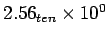
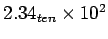
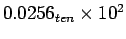
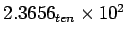
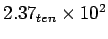
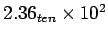

จงทำการบวก  ถึง  สมมุติให้มี Significant 3 หลัก และปัดเศษให้เข้าใกล้เลขฐานสิบมากที่สุด เริ่มจากมีการปัดเศษด้วยหลัก guard และ round
เริ่มต้นจากการขยับ Exponent ให้ตรงกันโดย
เป็น 
จากการนำเสนอจะมีหลัก guard และ round โดย guard มีค่าเท่ากับ 5 และ round มีค่าเท่ากับ 6 ผลบวกจะได้
2.3400
+ 0.0256
--------
2.3656
ดังนั้นผลบวกจะได้เท่ากับ  โดยที่ 0-49 จะทำการปัดลง และ 51-99 จะทำการปัดขึ้น โดยจะได้ผลลัพธ์ 
ถ้าไม่ใช้ guard และ round บิตเราจะได้
2.34
+ 0.02
------
2.36
ได้ผลลัพธ์  ที่ได้ผลลัพธ์ผิดไปจากที่มี guard และ round ไป 0.01